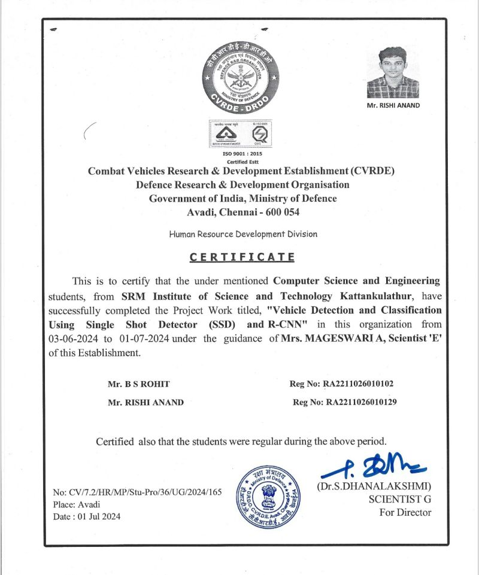
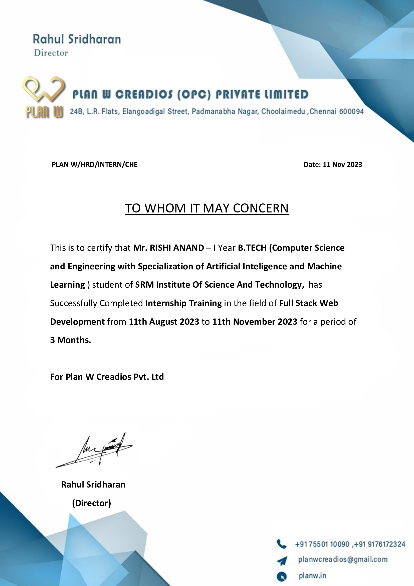
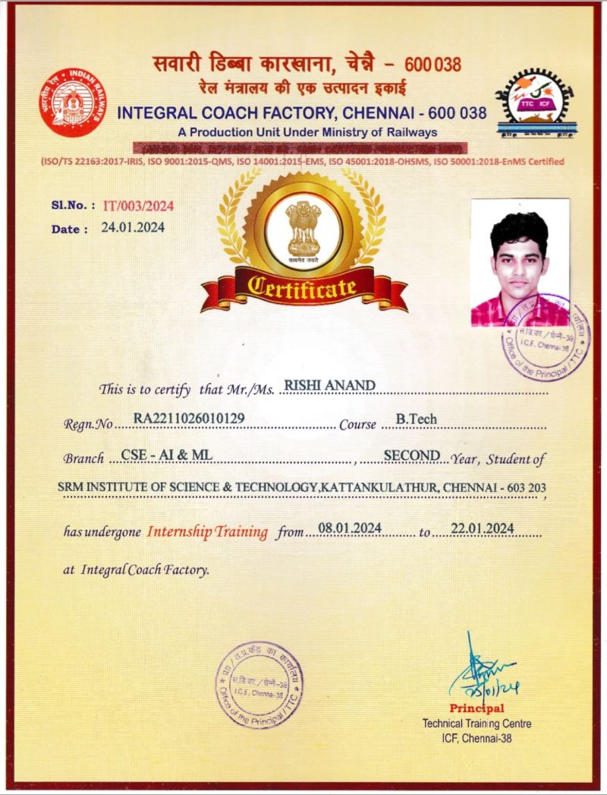

DRDO Internship
I am thrilled to announce that I have successfully completed my internship at the Combat Vehicles Research and Development Establishment (CVRDE), DRDO, Avadi. This experience has been incredibly enriching, allowing me to grow both professionally and personally. I would like to extend my heartfelt gratitude to: B S Rohit for their collaboration and teamwork throughout the internship. Babu Kumar sir for their guidance and support. ANNIE UTHRA mam for their invaluable leadership and encouragement. Thank you all for making this journey memorable and impactful. I look forward to applying the skills and knowledge gained in my future endeavors.
Internship Certificate
Full Stack Web Developer Intern
Completing a full-stack web development internship has been an incredibly enriching and transformative experience for me. Over the course of my internship, I have had the opportunity to delve into the multifaceted world of web development, expanding my skills and knowledge in numerous ways Overall, my full-stack web development internship has not only equipped me with a robust skill set but has also instilled in me a deep passion for this field. I'm now prepared to take my experiences and knowledge into the professional world, build a portfolio that showcases my capabilities, and pursue a fulfilling career in web development with confidence and enthusiasm.
Internship Certificate
Developer Intern
Empowered by 15 days of immersive internship at ICF, where every rail carries a story of craftsmanship and innovation. Ready to embark on the next journey with newfound knowledge and experience.
Internship Certificate
virtual AI-ML internship
Successfully completed a 10-week virtual AI-ML internship accredited by AICTE through Google, gaining invaluable skills and insights in cutting-edge technologies
Internship Certificate